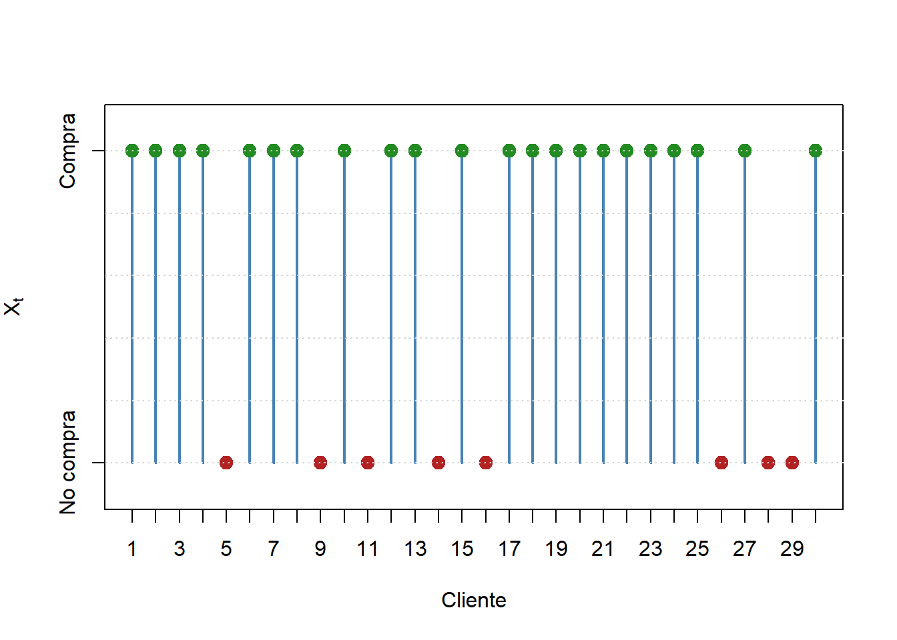
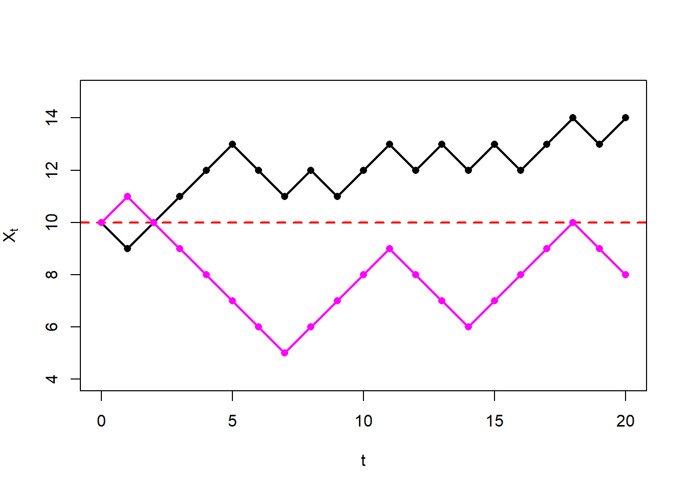
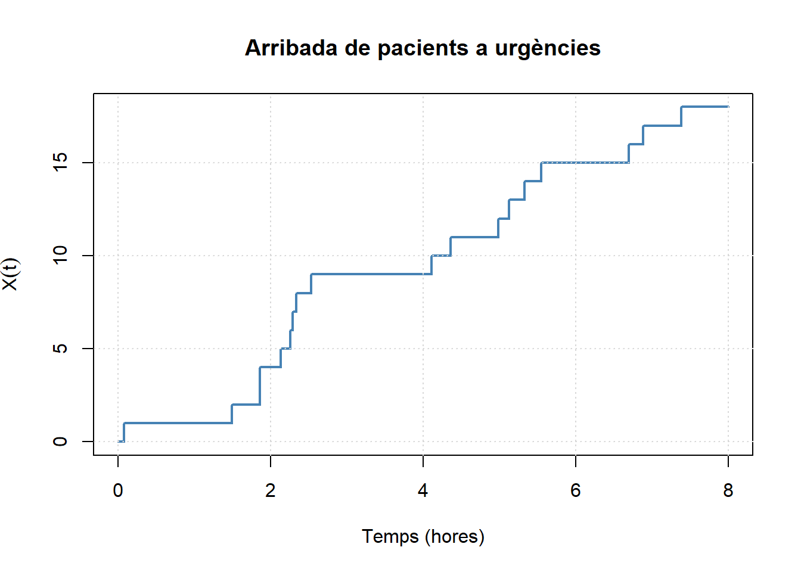
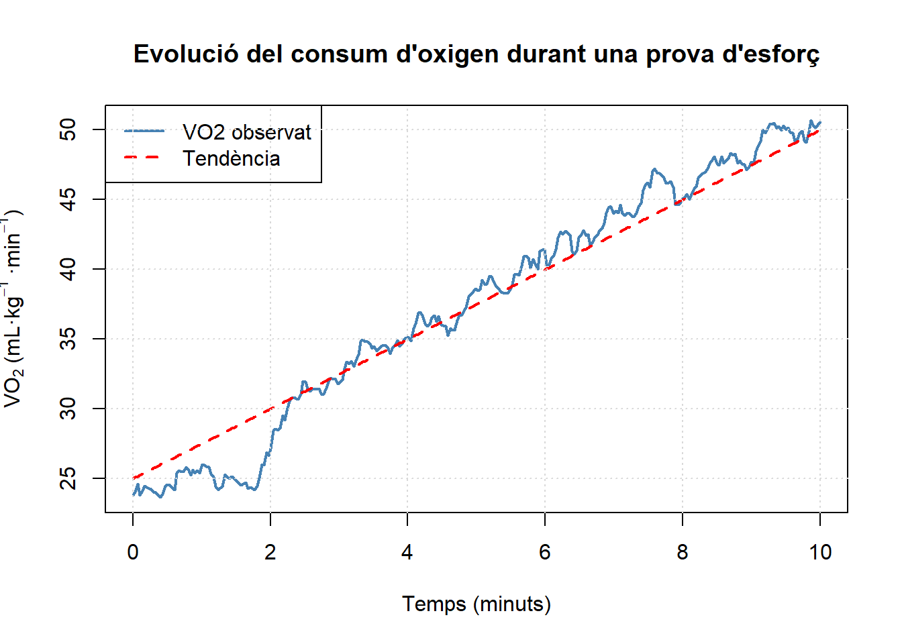

4 Processos estocàstics: Introducció i conceptes bàsics
4.1 Definició de procés estocàstic.
En el curs de probabilitat I es van estudiar les susccesions de variables aleatòries, es a dir col·leccions infinites numerables de variables aleatgòries i es va centrar l’interès en les diferents convergències d’aquestes variables, sobretot utilitzant la llei dels grans nombres i el teoerema central del Límit. En aquell moment no es varen analitzar les relacions entre les variables de la succesió i altres. En questst tema introduirem el concepte de procéss estocàstic. De tota manera cal resenyar que el concepte de procés estocàstic va mès enllà de les successions de variables. Es tracta d’una conjunt de variables aleatòries on pot estar indexat per un conjunt no numerables.
Un exemple seria l’estudi de l’ocurrència de un mateix esdeveniment al llarg del temps. Si aquestes ocurrències son independents i el tema d’interés es el temps que trancorreix entre esdeveniments, parlarem de la succeció \(\{X_n\}\) on \(X_i\)=(temps que passa entre l’esdeveniment i- i el i). Però si el que ens interessa es el nombre de vegades que l’esdeveniment ha succeit en l’interva l [0,t], la familia a considerar es \(N_t\), amb t>0 desde luego no es numerable .
Definició 4.1 Procés estòcastic
Un procès estocàstic es una colecció de variables aleatòries \(\{ X_t,t \in T \}\) definides sobre un espai de probabilitat \((\Omega, \mathcal{A},P)\).
\(T\) es un subconjunt de \(\mathbb{R}\) que s’anomena conjunt d’indexos. S’utilitza la lletra \(t\) donat que l’estudi de processos estocàstics surt del estudi de l’evolutió temporal de fenòmens aleatòris.
El conjunt de valors \(S \subseteq \mathbb{R}\) que poden prendre les variables aleatòries \(X_t\) s’anomena espai d’estats del procés.
Amb frequència l’índex \(t \in T\) que ordena les variables aleatòries del procés correspon al temps i \(X_t\) és l’estat del sistema en estudi a l’instant t.
Exemple 4.1 En una botiga de roba el 65% de les persones que entren compren algo. En una hora entren 30 clients en la botiga. El proceso que indica si el client compra o no compra es un procès estòcastic bernoulli
\[ X_t= \begin{cases} 1, & \text{si el client } t \text{ realitza una compra},\\ 0, & \text{si el client } t \text{ no realitza una compra}. \end{cases} \]
Si históricament el 65 % dels clients realitzen una compra i suposem que les decisions de comprar dels clients es independent una de l’altra, aleshores \[ X_t\sim\operatorname{Bernoulli}(0.65), \] Els resultats es mostren en el següent gràfic.

Figura 4.1: Exemple Commpra Botiga de roba
Exemple 4.2
4.2 Exemple 5.2
Un jugador comença amb 10 euros i juga consecutivament 20 partides. En cada partida aposta 1 euro a cara o creu.
Denotem per \(X_t\) els diners que té el jugador després d’haver jugat \(t\) partides, on
\[ t=0,1,\ldots,20. \qquad X_0=10 \]
En cada partida:
- amb probabilitat \(1/2\) guanya 1 euro;
- amb probabilitat \(1/2\) perd 1 euro.
Per tant,
\[ X_{t+1}= \begin{cases} X_t+1, & \text{amb probabilitat }1/2,\\[2mm] X_t-1, & \text{amb probabilitat }1/2. \end{cases} \]
En aquest exemple s’observen dues possibles realitzacions del procés estocàstic. Tot i que els dos jugadors comencen amb el mateix capital inicial i juguen el mateix nombre de partides, les seves trajectòries són diferents perquè el resultat de cada partida és aleatori.

Figura 4.2: Exemple de proceso del jugador arruinado
Exemple 4.3 Suposem que els pacients arriben a un servei d’urgències d’un hospital de manera aleatòria al llarg del temps. Sigui
\[ X(t)=\text{nombre de pacients arribats fins a l'instant }t, \qquad t\ge0. \]
Si les arribades segueixen una distribución de Poisson amb una intensitat \(\lambda= 3\) pacients per hora, com que t es continu \(X(t)\sim\operatorname{Poisson}(\lambda t)\)
En el gràfic es mostra una realització del procés en les primeres 8 hores.La trajectòria és una funció esglaonada: roman constant entre dues arribades consecutives i augmenta una unitat cada vegada que arriba un nou pacient.

Figura 4.3: Exemple de nombre d’urgències per temps
Exemple 4.4 En una prova d’esforç es mesura el consum d’oxigen d’un esportista (\(VO_2\)) cada segon durant 10 minuts i es recull en un procès estocàstic \(X(t)=\text{valor del } V0_2 \text{ en l'instant }t\)
En aquest exemple suposem que el consum d’oxigen augmenta progressivament durant l’exercici i que presenta fluctuacions aleatòries.
La línia blava representa una possible realització del procés corresponent a les mesures de $VO_2. La línia vermella discontínua representa la tendència mitjana esperada durant l’exercici. En auquest cas es representa una sèrie temporal biomèdica on clarament les observacions no son independents

Figura 4.4: Exemple de nombre d’urgències per temps
Un procès estocàstic també pot ser considerat com una funció aleatòria de doble argument \(\{ X(t,\omega), t \in T , \omega \in \Omega\}\). Si fixem \(\omega=\omega_0\) tindrem una realització del procés \(X(.,\omega_0)\) cuya representació gràfica son le anomenades trajectòries del procés que hem representant en els 4 gràfics anteriors.
Si per contra fixem \(t=t_0\) estarem parlant de la variable aleatoria \(X_{t_0}= X(t_0,.)\) que es la distribución de la variable de interés en el punt d’observació t
4.2.1 Funcions de moment un procès estocástic
Com a variable aleatoria de dos dimensions podem definir les següents funcións característiques de un procès estocàstic \(\textbf{X}=\{X_t\}_{t \in T}\)
Funció mitjana d’un procès estocàstic
Es defineix com la funció
\[ \mu_X(t)= E[X_t], \in T= \begin{cases} \displaystyle \sum_{x \in D_{X_t}} x P(X_t=x) & \text{si } X_t \text{ és discret} \\ \displaystyle \int_{- \infty}^{+\infty} xf_t(x) dx & \text{si } X_t \text{ és continu} \end{cases} \tag{4.1} \]
Funció de autocorrelació
La funció de autocorrelació del procés \(\textbf{X}=\{X_t\}_{t \in T}\) es defineix com el valor esperat del producte de les variables aleatòries \(X_{t_1}\) i \(X_{t_2}\) en els instants \(t_1\) i \(t_2\) respectivament, és a dir
\[ R(t_1,t_2)=E\!\left[X_{t_1}X_{t_2}\right]= \begin{cases} \displaystyle \sum_{x_1\in D_{X_{t_1}},\,x_2\in D_{X_{t_2}}} x_1x_2\,P(X_{t_1}=x_1,\,X_{t_2}=x_2), & \text{si } X_t \text{ és discret},\\[3ex] \displaystyle \int_{-\infty}^{+\infty} \int_{-\infty}^{+\infty} x_1x_2\,f_{X_{t_1},X_{t_2}}(x_1,x_2)\,dx_1\,dx_2, & \text{si } X_t \text{ és continu}. \end{cases} \tag{4.2} \]
Funció de autocovariància
A partir del moment central conjunt de dues variables asociades a dos temps qualsevol, \(t_1\) i \(t_2\), l’autocovariància és
\[ C(t_1,t_2)=E[(X_{t_1}-\mu(t1))(X_{t_2}-\mu(t2))] \tag{4.3} \]
ràpidament es dedueix la relació entre la autocorrelació i la autocovariància
\[ C(t_1,t_2)= R(t_1,t_2)-\mu(t_1)\mu(t_2) \]
en el cas particular que \(t_1=t_2=t\) parelm de la funció de variància \(\sigma^2(t)=C(t,t)\)
Finalment definim la funció de correlació com
\[ \rho(t_1,t_2) \dfrac {C(t_1,t_2)} {\sqrt{\sigma^2(t_1)\sigma^2(t_2)}} \] que obviamente pren valors enttre \([-1,1]\)- Em eñ cas de les series temporals es reserva el nom de autocorrelació per aquesta funció.
4.3 Processos estocàstics discrets i continus.
Els processos estòcastics es poden classificar en funció del tipo de variables T i X_t
| \(X_t\) | T Discret | T Continu |
|---|---|---|
| Discret | Cadena | Proc. puntual |
| Continu | Suc. de v.a. | Proc. continu |
-Un procès discret amb el temps discret , que s’anomena cadena, seria l’exemple 4.1 on es veia en 30 clients que entraven en una botiga si compraven o no
-Un procés continu en un temps discret s’anomena un succeció de variables. Si en el cas anterior en lloc de mesurar si compra o no compra haguessim mesurat l ’alçada o el pes del client seria un bon exemple
-Un procès puntual com el de l’exemple 4.3 on es mesura el número de urgències en un determinat temps és el cas on el procès es discret pero el temps és continu.
-El procès continu es aquell en el que la variable es continua i el temps també. Es el cas de l’exemple 4.4 on es mesura el \(VO_2\) d’un esportista en 10 minuts d’esforç
4.4 Processos estocàstics estacionaris i no estacionaris.
Definició 4.2 Distribucions finito-dimensionals En general les variables aleatòries del procés \(\textbf{X}=\{X_t\}_{t \in T}\) no son independents entre elles. Si \(\{ t_1,t_2,..,t_n\} \subset T\) és un subconjunt finit de qualsevol dels índex, la distribució conjunta del vector \((X_{t_1},X_{t_2},...,X_{t_n})\) vindrà donada per
\[ F_{t_1},{t_2},...,{t_n}(x_1,...,x_n))=P(X_{t_1}\leq x_{t_1},X_{t_2}\leq x_{t_2},...,X_{t_n}\leq x_{t_n}) \] Aquesta distribució rep el nom de distribució finito-dimensional del procés. Tambe es poden expressar aquestes distribucion a partir de les funcions de densitat i probabilitat conjuntes ddel vector.
Un procés estòcastic es pot descriure especificant les seves distribucions finito-dimensionals, que permeten obtenir la probabilitat de qualsevol esdeveniment involucrat en el procés. Cal remarcar qeu el conjunt de distribucions finio-dimensionals no determinen per complet les característiques del procés, i en ocasions cal definir certes característiques o propietats adicionals. Si el procès es pot específicar completament a partir de les distribucions finites , es diu que el procés es separable.
Definició 4.3 Processos de variables independents
sea \(\textbf{X}=\{X_t\}_{t \in T}\) es diu que es un procés estòcastic de variables aleatòries independents si \(X_m\) i \(X_n\) son independents para todo \(n,m \leq 0\) con \(n \neq m\)
L’exemple 4.1 del procès on es vol saber si un client que entra en una botiga compra o no es tracta de un procès de variables independents
Definició 4.4 Processos amb increments independents
Sea \(\textbf{X}=\{X_t\}_{t \in T}\) es diu que es un procés estòcastic que té increments independents si per a qualsevol \(t_0<t_1<...<t_n,\quad t_i \in T\) les variables aleatòries:
\[ X_{t_1}-X_{t_0},X_{t_2}-X_{t_1},...,X_{t_n}-X_{t_{n-1}} \] són independents.
En l’exemple 4.3 sobre el nombre d’urgències, el número de urgències en la primera hora és independent del de la segona hora i de la tercera hora.
Definició 4.5 Processos estacionaris forts
El procès \(\textbf{X}=\{X_t\}_{t \in T}\) es fortament estacionari si les families de les variables aleatòries \[ (X_{t_1},X_{t_2},...,X_{t_n}) \quad \text(i) \quad (X_{t_1+h},X_{t_2+h},...,X_{t_n+h}) \] tenen la mateixa distribució conjunta per a tot \(h>0\), tots \(\{t_1,...,t_n\} \subset T\) i \(n\geq 1\)
Theorem 4.1 La funció mitjana d’un procés estocàstic estacionari es constant
Demostració
\[ \mu_X(t)=\int_{- \infty}^{+\infty} xf_t(x) dx= \int_{- \infty}^{+\infty} xf(x) dx=m(x) \] Més en general , qualsevol propietat de una variable singular d’un procés estaconari es invariant al temps
Definició 4.6 Processos estacionaris dèbil
El procès \(\textbf{X}=\{X_t\}_{t \in T}\) es dèbilment estacionari si per a tot \(t_1\) i \(t_2 \in T\) i tot \(h>0\),
\[ E[X_{t_1}]=E[X_{t_2}] \quad \text{i} \quad Cov(X_{t_1},X_{t_2})= Cov(X_{t_1+h},X_{t_2+h}) \]
– Una forma equivalent de definir l’estacionarietat dèbil és dir que un procès es dèbilment estacionari si i només si te esperança constant i la covariància entre \(X_{t_1}\) i \(X_{t_2}\) només depen de \(t_2-t_1\). La estacionarietat dèbil implica la estacionarietat forta.